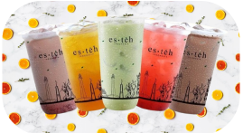
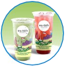

Es teh Indonesia adalah minuman sederhana yang sangat populer dan bisa ditemukan di hampir setiap sudut negara ini, mulai dari warung pinggir jalan hingga restoran kelas atas. Terbuat dari teh hitam yang diseduh kuat lalu disajikan dengan es batu dan sedikit gula, es teh menjadi pilihan minuman penyegar di iklim tropis Indonesia. Setiap daerah di Indonesia mungkin memiliki gaya penyajian yang berbeda; beberapa lebih suka menambahkan perasan jeruk nipis untuk memberikan rasa segar, sementara lainnya menyajikan es teh dengan rasa manis pekat yang khas.
Dalam proses penyajiannya, es teh Indonesia menggunakan bahan berkualitas terbaik yang diolah dengan teknik yang tepat. Mengadopsi konsep penyajian yang dapat disesuaikan, pelanggan es teh Indonesia dapat menentukan sendiri jenis topping, takaran gula, dan jumlah es yang diinginkan. Es teh Indonesia juga selalu berinovasi dengan menghadirkan menu terbaru untuk memuaskan selera pelanggan.
